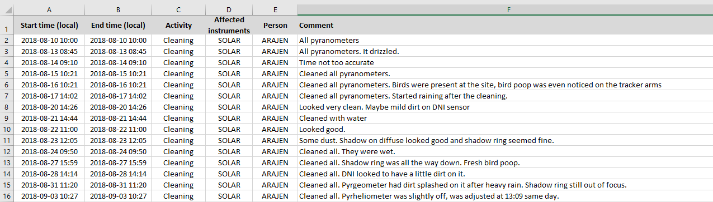

Station logbooks with Google Forms#
Logbook keeping is an essential practice when operating a meterological station, or carrying out an experiement or measurement campaign for that matter. During the post data analysis, being able to look back at the notes in the logbook is invaluable and can make it effortless to explain anomalies in the data, e.g., the measurement was unusual low (logbook entry denotes soiling), or a change in measurement accuracy (instrument change noted in logbook).
The first rule of logbooks is that any logbook is better than no logbook. But there’s no reason we can’t have a great logbook. But first we must understand what makes a great logbook - requireing us to consider both the person filling it out and the end user.
This blog post will discuss common logbook practices and requirements with a focus on solar radiation measurements, though there are no reason these ideas aren’t transferable to other fields of science.
Requirements#
It’s important that the information is well structured and available in order to be useful. Keeping in mind that the simplier and easier it is to fill out the logbook, the greater likelihood there is for the logbook being used correctly.
Maintenance inspections have to be kept as simple as possible to encourage frequent doing! This should not be underestimated. If the inspections are seen as tedious and difficult, there is a very high certainty of it being carried out infrequently and perhaps eventually ceaused to be done.
The motivitation for the logbook developed in this blog post is therefore three-fold:
To ensure that the accurate and useful information is being collected
To make sure the information is organized in a way that makes it easy to use
To facilitate an easy and seamless logbook procedure
Historically, logbooks have been made with pen and paper, and this practice still exists in many organizations to this day. While a logbook is better than no logbook, a handwritte logbook certainly does not meet the criteria of being easily accessible, restricting its usage. The step up from a hand-written logbook is a simple Excel sheet with columns corresponding to start/end time of the inspection, the action carried out, and the affected instruments.
Here’s an example of a logbook made in Excell, one which our lab have been using for years to log any activity related to DTU s Climate Station. 
What should be noted?#
A loogbook should be able to take a variety of different events, including:
Regular maintenance practices (cleaning of instruments, spirit level, pyrheliometer alignment, descicant color, etc.)
Infrequent maintanance practices (leveling of instruments, calibration of instruments, changing desciant, etc.)
Any abnormalities and malfunctions
Why Google Forms?#
It’s easy to use (we’ve all had experience with them)
It’s easy to setup and adjust (non-experts can modify a template, no fancy software required)
It’s free (budget is not a deciding factor and it can be tried immidiately)
It’s easy to make manual corrections
Supports both smartphones and desktops
Keep it simple!#
Previous log-books for the BSRN network included the notation of the temperature, however, this is already logged by the system and can be eliminanted. Start and end time is automatically denoted, elimating the possebility of user error.
Also, cloud type and surface conditions were described in text, but this can be documented unbiased by a simple photo.
Nice features#
Be able to click a button to select current time
Enforce that end time is after start time (perhaps even display the time duration)
Be able to select which instruments concerns a comment entry?
Renaming of photos to be the date/time they were taken - perhaps even title and author?
Have the opening page be a choice list, where the user selects which kind of entry to make:
Regular maintenance
Noting of abnormality
Instrument change / calibration
the user is then taken to a customized survey that matches the specific maintenance type.
Google Forms is free for personal use, and available for $6 a month for businesess.
By doing the log book filling as you’re doing the maitenance you ensure that the log books get’s filled out. Often times the maitenance is better than what is being reported, because it’s easy to forget to log it once you’ve done it.#
Collect quantitative information, which easily can be sorted or plotted.
What to do in case of rain? - probably say not checked
Drawback
Requires users to have a Google account
Comments#
Denote existing conditions and what actions were taken - and final state if necessary. Have a section for before and after photos.
What has me really convinced is the Excel sheet that can be exported. And it contains links to the images, so you can immidiately see if an image was taken that day and take a quick peak! This should not be underestimated, it really makes investigating the data easy, making for better science!
A form with pre-specified fields, some of which are mandatory and others which are not, can be a strong driver to promote proper maintenance keeping.
“Care must be taken in the design of such a log so that text can be easily added beyond the normal “check-off” information”